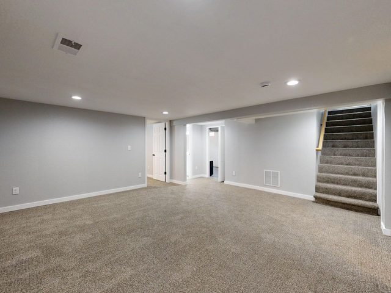
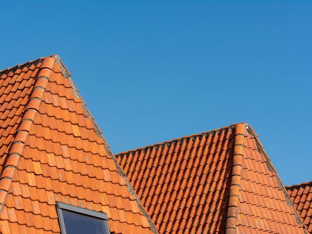
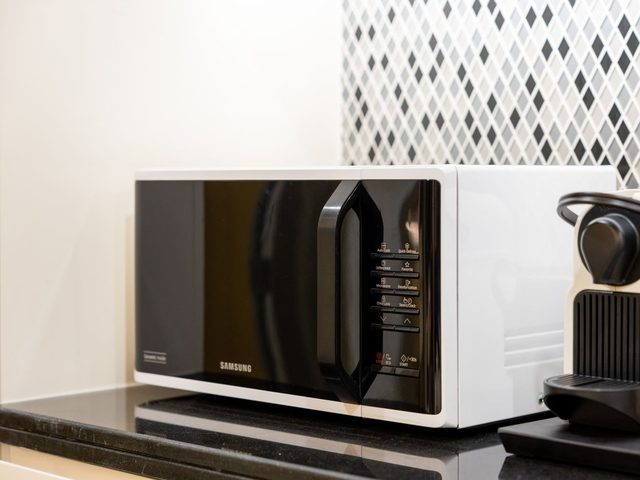
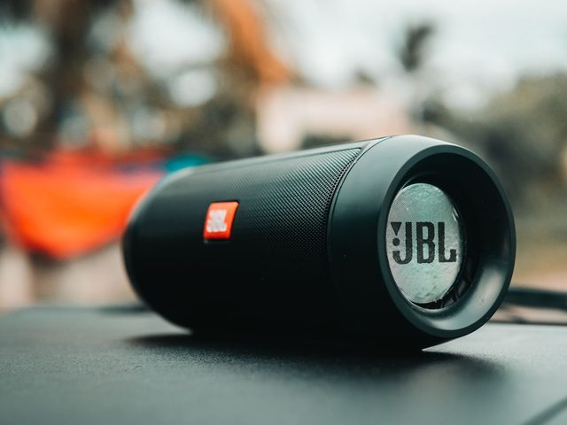
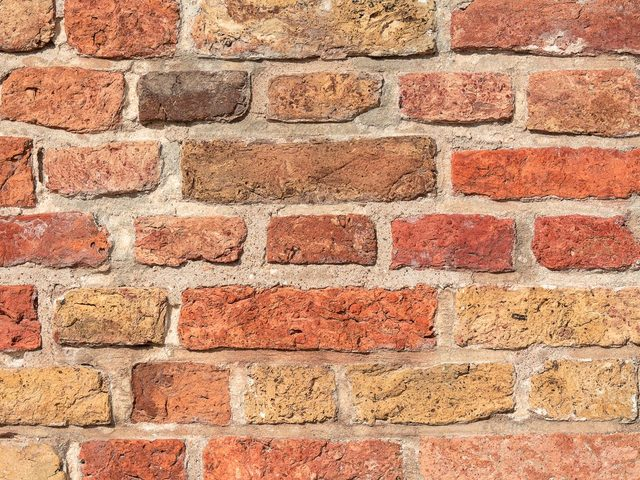
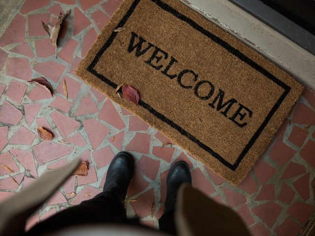
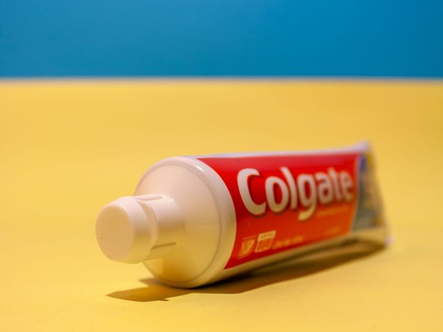
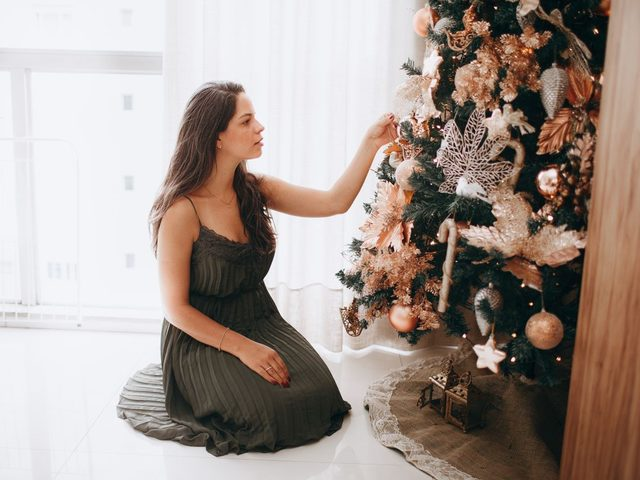

VOCABULARY · 主題 2000 字 PART 2 UNIT 15
Houses & apartments．房子與公寓
房子的各部分、家具、家電、工具和家事，共 53 個。furniture、housework、soap 不可數；shelf 的複數是 shelves。
共 53 個單字．點 🔊 聽發音

1buildingn.
建築物；大樓
build 建造 → building
Taipei 101 is a very tall building.台北 101 是一棟很高的大樓。

2basementn.
地下室
base 底部 + -ment
We keep old boxes in the basement.我們把舊箱子放在地下室。

3fencen.
籬笆；圍牆
The dog jumped over the fence.那隻狗跳過了籬笆。

4garagen.
車庫
Dad parks the car in the garage.爸爸把車停在車庫。

5halln.
大廳；會堂；走廊
city hall 市政府
The school concert is in the hall.學校音樂會在大禮堂舉行。

6ceilingn.
天花板
↔ floor 地板
There is a big fan on the ceiling.天花板上有一個大吊扇。

7downstairsadv.
在樓下；往樓下
↔ upstairs
Breakfast is ready. Come downstairs!早餐好了，下樓來吧！

8roofn.
屋頂
複數 roofs
A cat is sleeping on the roof.一隻貓在屋頂上睡覺。
9upstairsadv.
在樓上；往樓上
↔ downstairs
My bedroom is upstairs.我的房間在樓上。

10furnituren.
家具
不可數；a piece of furniture
We bought some new furniture for the living room.我們幫客廳買了一些新家具。

11armchairn.
扶手椅
arm + chair
Grandpa is reading in his armchair.爺爺坐在扶手椅上看書。

12bookcasen.
書架；書櫃
book + case
The bookcase is full of comic books.書櫃裡塞滿了漫畫書。

13closetn.
衣櫥；壁櫥
Hang your jacket in the closet.把你的外套掛進衣櫥。

14curtainn.
窗簾；布幕
draw the curtains 拉上窗簾
Please close the curtains. The sun is too bright.請把窗簾拉上，太陽太刺眼了。
15faucetn.
水龍頭
= tap（英式）
Turn off the faucet when you brush your teeth.刷牙時要把水龍頭關掉。

16mirrorn.
鏡子
She looked at herself in the mirror.她看著鏡子裡的自己。

17shelfn.
架子；擱板
複數 shelves
Put the cups on the top shelf.把杯子放在最上層的架子上。

18sinkn. / v.
水槽；洗手台；下沉
sink-sank-sunk
Put the dirty dishes in the sink.把髒碗盤放進水槽。

19tubn.
浴缸；桶；盆
bathtub 浴缸
The baby is playing in the tub.寶寶在浴缸裡玩。

20carpetn.
地毯
Don't spill juice on the carpet.別把果汁灑在地毯上。

21hangern.
衣架；掛鉤
hang 掛 + -er
Put your shirt on a hanger.把你的襯衫掛在衣架上。

22pillown.
枕頭
pillow fight 枕頭大戰
We had a pillow fight at the sleepover.我們在過夜派對上玩枕頭大戰。

23sheetn.
一張（紙）；床單
a sheet of paper 一張紙
Write your name on the answer sheet.在答案卷上寫你的名字。

24toothbrushn.
牙刷
複數 toothbrushes
Change your toothbrush every three months.每三個月換一支牙刷。

25soapn.
肥皂
不可數；a bar of soap
Wash your hands with soap and water.用肥皂和水洗手。

26air conditionern.
冷氣機
簡稱 AC
It's so hot. Turn on the air conditioner.好熱，開冷氣吧。

27dressern.
梳妝台；五斗櫃
dress 穿衣 + -er
Her hairbrush is on the dresser.她的梳子在梳妝台上。

28dryern.
吹風機；烘乾機
hair dryer 吹風機
Dry your hair with the hair dryer.用吹風機把頭髮吹乾。

29flashlightn.
手電筒
flash + light
Take a flashlight in case the power goes out.帶支手電筒，以防停電。

30freezern.
冷凍庫
freeze 冷凍 + -er
The ice cream is in the freezer.冰淇淋在冷凍庫裡。

31heatern.
暖氣機；加熱器
heat 熱 + -er
Turn on the heater. It's freezing.開暖氣吧，好冷。

32microwaven.
微波爐
microwave oven
Heat the milk in the microwave for one minute.把牛奶放進微波爐熱一分鐘。

33ovenn.
烤箱
The cookies are baking in the oven.餅乾正在烤箱裡烤。

34speakern.
喇叭；音響；說話者
speak + -er
Turn up the speaker. I can't hear the music.把喇叭開大聲一點，我聽不到音樂。

35stoven.
爐子；火爐
gas stove 瓦斯爐
The soup is on the stove.湯在爐子上。

36printern.
印表機
print + -er
The printer is out of paper.印表機沒紙了。

37brickn.
磚塊
The old house is made of red bricks.那棟老房子是紅磚蓋的。
38bucketn.
水桶
a bucket of water 一桶水
Fill the bucket with water to wash the car.把水桶裝滿水來洗車。

39hammern. / v.
鐵鎚；用鎚子敲
Dad used a hammer to fix the chair.爸爸用鐵鎚修椅子。

40houseworkn.
家事
不可數；do housework
We all help with the housework on weekends.我們週末都會幫忙做家事。

41matn.
墊子；地墊
yoga mat 瑜伽墊
Wipe your feet on the mat.在地墊上把腳擦乾淨。

42needlen.
針
needle and thread 針線
Grandma sews buttons with a needle and thread.奶奶用針線縫扣子。

43pann.
平底鍋
pots and pans 鍋碗瓢盆
Fry the egg in a pan.用平底鍋煎蛋。

44teapotn.
茶壺
tea + pot
Grandpa makes tea in a small teapot.爺爺用小茶壺泡茶。
45toiletn.
馬桶；廁所
flush the toilet 沖馬桶
Don't forget to flush the toilet.別忘了沖馬桶。

46trash cann.
垃圾桶
= garbage can
Throw the paper in the trash can.把紙丟進垃圾桶。

47wokn.
炒菜鍋
中式的圓底鍋
Mom cooks fried rice in a wok.媽媽用炒菜鍋炒飯。

48tuben.
軟管；管子
a tube of toothpaste 一條牙膏
We need a new tube of toothpaste.我們需要一條新牙膏。

49decoratev.
裝飾；布置
decoration 裝飾品
We decorated the tree for Christmas.我們為聖誕節布置聖誕樹。

50designv. / n.
設計
designer 設計師
She designed her own T-shirt.她設計了自己的 T 恤。

51repairv.
修理
= fix
Can you repair my bike?你可以修我的腳踏車嗎？

52sweepv.
掃（地）
sweep-swept-swept
Please sweep the floor after dinner.晚餐後請掃地。

53addressn.
地址
e-mail address 電子郵件地址
Please write your address on the card.請在卡片上寫你的地址。
FOCUS
-er 結尾的家電和工具
| 動詞 | 東西 |
|---|---|
| heat 加熱 | heater 暖氣機 |
| freeze 冷凍 | freezer 冷凍庫 |
| dry 弄乾 | dryer 吹風機 |
| print 列印 | printer 印表機 |
| hang 掛 | hanger 衣架 |
動詞加 -er 可以變成「做這件事的東西或人」。
FOCUS
容易錯的數法
| 字 | 說法 |
|---|---|
| furniture（不可數） | a piece of furniture |
| soap（不可數） | a bar of soap |
| shelf | shelves（複數） |
| sweep | swept（過去式） |